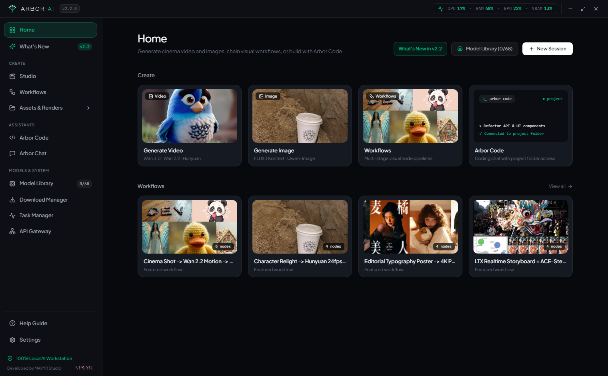
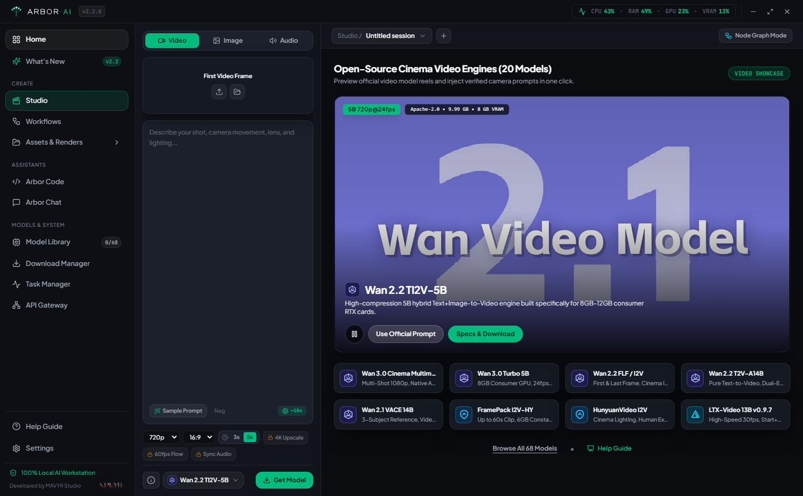
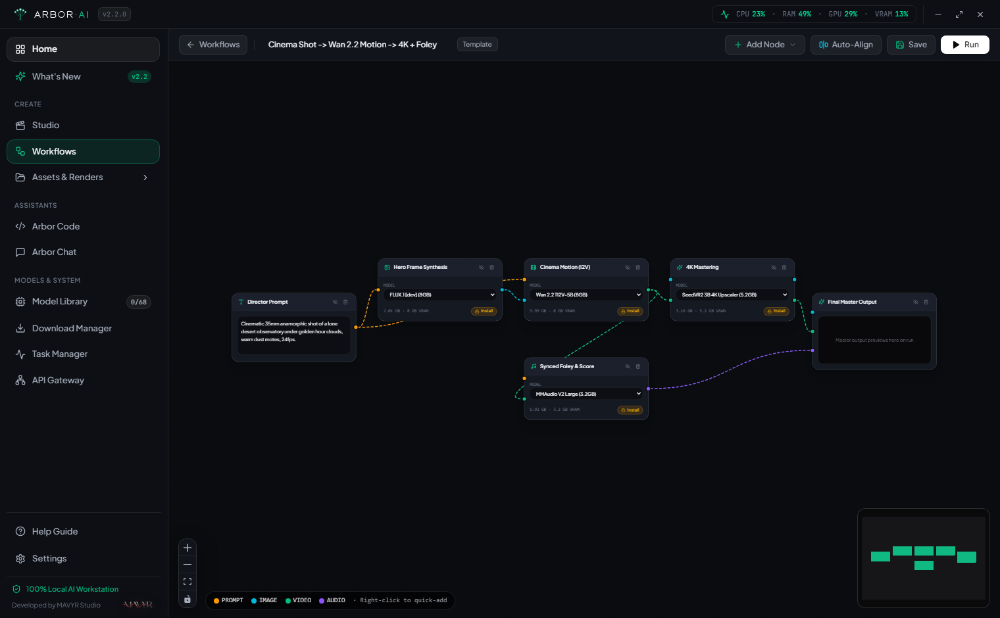
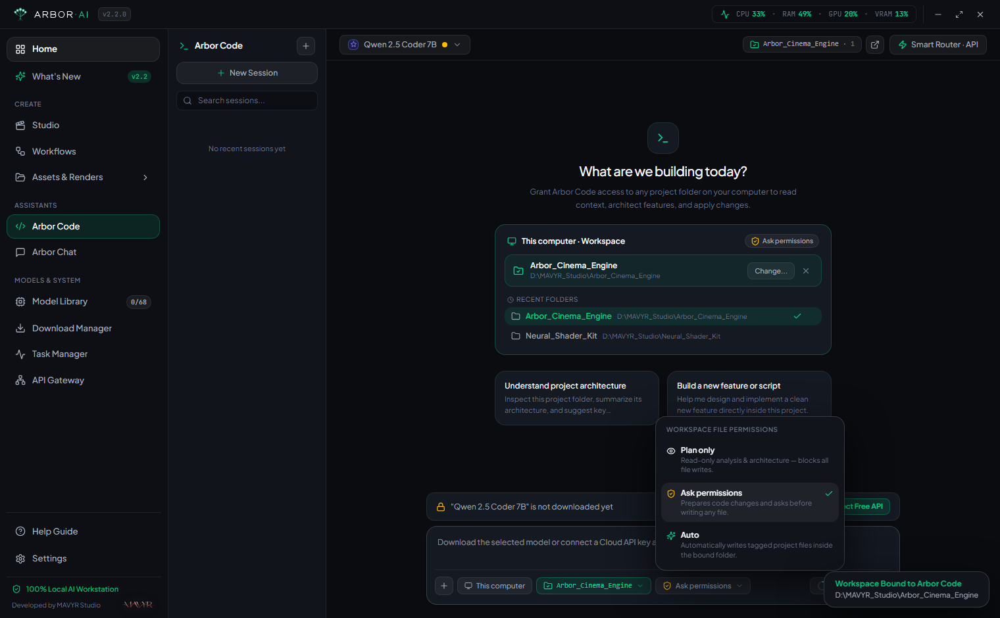
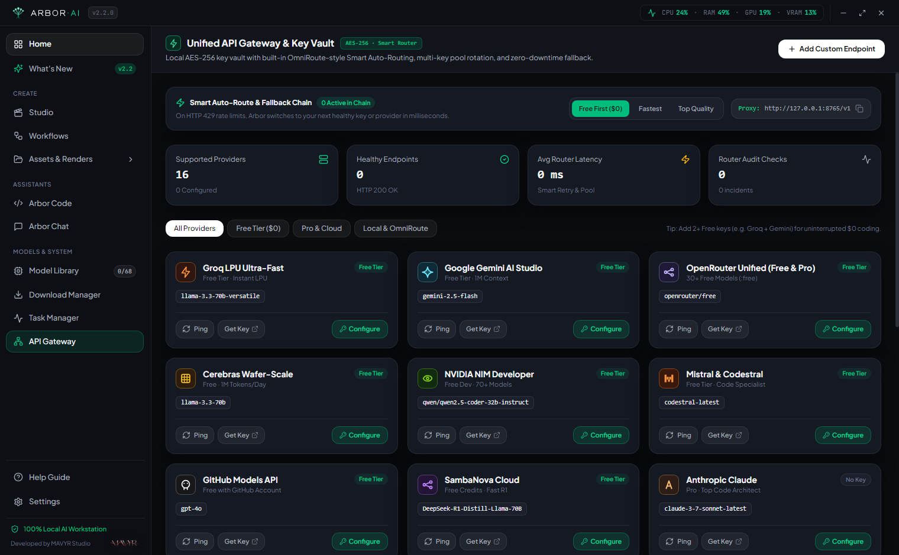
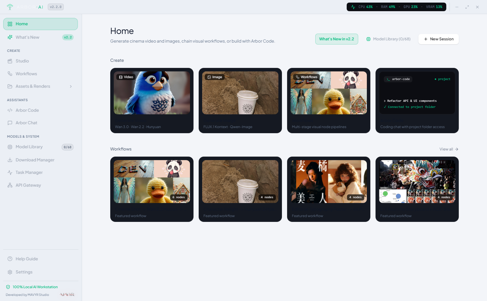

On-demand model library
Pull only the checkpoints your production needs—from Wan 3.0 Cinema and HunyuanVideo to Qwen 2.5 Coder—with resumable shard verification.
Direct 1080p video, wire visual node graphs, and ship software inside one unified desktop workstation—engineered by MAVYR Studio around 70 open-source models and smart multi-API routing.
Windows 10 & 11 (64-bit) · Release 2.3.0 · 398 MB

Move between generative video, node-based compositing, repository engineering, and multi-provider routing without leaving your local workspace.




Every subsystem—from GPU memory scheduling to AES-256 credential storage—executes directly on your machine with zero telemetry.
Pull only the checkpoints your production needs—from Wan 3.0 Cinema and HunyuanVideo to Qwen 2.5 Coder—with resumable shard verification.
Per-model token budgets automatically summarize older turns before context saturation, keeping deep architectural sessions responsive.
Real-time GPU utilization, VRAM allocation, and thermal monitoring match quantization and offload settings to your exact card.
Source trees, rendered masters, node graphs, and encrypted API keys stay on your local disks with no mandatory cloud sign-in.
Drag the optical divider to inspect Obsidian Dark and Studio Daylight—both tuned for long creative and engineering sessions.

Release 2.3 is available now for Windows x64, with native Apple Silicon and Linux builds in active development at MAVYR Studio.
Windows 10 & 11 (64-bit) · 398 MB
Apple Silicon (M1 – M4) · Universal
Ubuntu / Fedora (x64) · AppImage